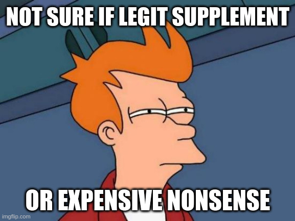

By Coach Matt | TODO: X min read
Recommended Supplements
I find that a lot of people tend to land far on one side or the other of the "Opinions on Supplements" spectrum.
Either they have bought into marketing hype so much that they regularly spend hundreds of dollars on products that are dubious at best (expensive scams at worst) OR they write off the entire industry as completely worthless and never use any kind of supplement at all, assuming that even the most well-supported products are probably a total waste because the whole field just seems sus.
 I can understand the skepticismLike so many topics in the health and fitness industry, there is some truth behind both sides but it's not obvious how to separate the wheat from the chaff, i.e. the legitimate products from the nonsense. That's precisely what I intend to do with this article; I am going to give you an overview of the handful of supplements I have been personally using and professionally recommending to clients for many years, including how they can help and some tips to make sure you're getting a quality version.
***
NOTE: There will be no affiliate links in this article. I am not in cahoots with any specific brands I mention, I am simply sharing examples that I honestly enjoy and endorse.
On the value of supplements
Before I cover any specific supplements, there's an extremely important point I need to emphasize: supplements are SUPPLEMENTAL to a proper exercise routine and diet. More often than not, the benefits and progress you think the right supplements will give you are actually going to come from an intelligent lifting program combined with consistently high-quality nutrition and good sleep habits.
I've spoken with so many fitness enthusiasts who drop a sizeable amount of money on supplements every month, yet their lifting routine is a joke or they don't even lift at all. These folks haven't cooked a decent meal in months and can't remember the last time they got 8 hours of quality sleep, yet they're taking a bunch of supplements thinking that will somehow makeup for the fact that they're neglecting the basic pillars of health.
Supplements are SUPPLEMENTAL to a proper exercise routine and diet
Taking a bunch of supplements while completely neglecting a solid workout routine is like making sure you always have mints on hand yet you never brush or floss your teeth. That might be hard for some of you to hear, but I can't write an entire article about what is ultimately a small slice of the health & fitness pie without making sure I'm not giving people the wrong impression about the relative importance of these supplemental products. I want you to prioritize intelligently and focus your efforts where they matter most instead of "majoring in the minors".
To be clear, I don't mean to say that you can't get benefits from something like Vitamin D unless you're lifting and eating a high-protein diet. Some supplements will give you a benefit regardless of what your movement or eating habits look like, but you shouldn't think for one second that supplements are anything but a miniscule contributor to your overall health and fitness. Even a solid, evidence-based supplement routine followed consistently is going to represent a tiny percentage of your overall health and progress compared to sound exercise, diet and recovery strategies.
To put it another way: you can be extremely healthy and fit even if you never took a single one of the supplements I highlight in this article, so long as you're regularly engaging in resistance training, eating a variety of nutritious foods and managing stress and recovery appropriately, but the reverse isn't true in the slightest.
If you never lift, you eat a nutritionally deficient diet and ignore the importance of sleep and stress management, then your health and fitness will suffer greatly, even if you diligently take every supplement mentioned in this article for the rest of your life. I mean, creatine is amazing and I'll expand on why below, but if you never lift then sarcopenia and frailty are going to destroy your quality of life decades before they would otherwise.
Do you really need to buy a $40 tub of pre-workout if you're just going to sit on your phone for 8 minutes between your lame-ass sets of sloppy isolation work? You'd get much better results if you just had a cup of coffee and then did some legitimate sets of squatting and pressing. Get the basics dialed in FIRST, then consider incorporating a few supplements to enhance what should already be a solid overall routine.
I am going to focus on the supplements that have the best cost/benefit ratios, the best "bang for your buck".